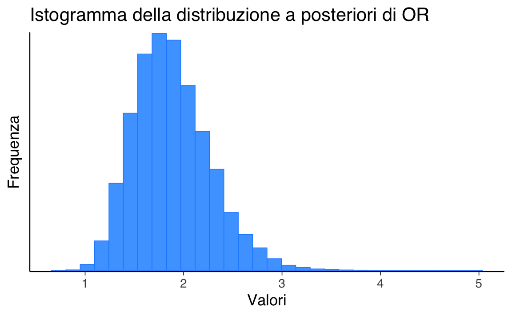
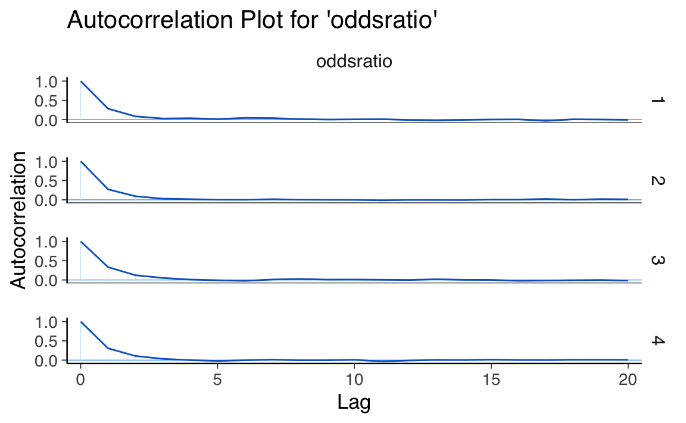
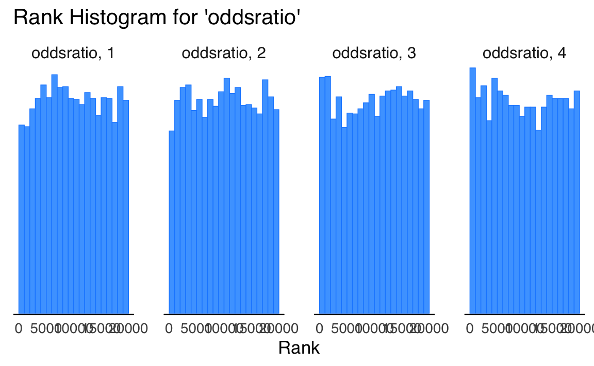

here::here("code", "_common.R") |>
source()
# Load packages
if (!requireNamespace("pacman")) install.packages("pacman")
pacman::p_load(cmdstanr, posterior)58 Analisi bayesiana dell’odds-ratio
Prerequisiti
Concetti e Competenze Chiave
Preparazione del Notebook
58.1 Introduzione
In questo capitolo, esploreremo l’applicazione degli strumenti statistici descritti nei capitoli precedenti all’analisi bayesiana di due proporzioni. Inizieremo definendo i concetti di odds, odds ratio e logit. Successivamente, mostreremo come effettuare l’analisi bayesiana per il confronto tra due proporzioni.
Un rapporto di odds (OR) è una misura di associazione tra un’esposizione (o un certo gruppo o una certa conditione) e un risultato. L’OR rappresenta gli odds che si verifichi un risultato dato un’esposizione particolare, confrontate con gli odds del risultato che si verifica in assenza di tale esposizione.
58.2 Odds
Il termine “odds” rappresenta il rapporto tra la probabilità che un evento si verifichi e la probabilità che l’evento opposto si verifichi. Matematicamente, l’odds può essere calcolato come:
\[ \text{odds} = \frac{\pi}{1-\pi}, \]
dove \(\pi\) rappresenta la probabilità dell’evento di interesse.
Mentre una probabilità \(\pi\) è sempre compresa tra 0 e 1, gli odds possono variare da 0 a infinito. Per comprendere meglio gli odds lungo questo spettro, consideriamo tre diversi scenari in cui \(\pi\) rappresenta la probabilità di un evento.
Se la probabilità di un evento è \(\pi = \frac{2}{3}\), allora la probabilità che l’evento non si verifichi è \(1 - \pi = \frac{1}{3}\) e gli odds del verificarsi dell’evento sono:
\[ \text{odds} = \frac{2/3}{1-2/3} = 2. \]
Questo significa che la probabilità che l’evento si verifichi è il doppio della probabilità che non si verifichi.
Se, invece, la probabilità dell’evento è \(\pi = \frac{1}{3}\), allora gli odds che l’evento si verifichi sono la metà rispetto agli odds che non si verifichi:
\[ \text{odds} = \frac{1/3}{1-1/3} = \frac{1}{2}. \]
Infine, se la probabilità dell’evento è \(\pi = \frac{1}{2}\), allora gli odds dell’evento sono pari a 1:
\[ \text{odds} = \frac{1/2}{1-1/2} = 1. \]
58.2.1 Interpretazione
Gli odds possono essere interpretati nel modo seguente. Consideriamo un evento di interesse con probabilità \(\pi \in [0, 1]\) e gli odds corrispondenti \(\frac{\pi}{1-\pi} \in [0, \infty)\). Confrontando gli odds con il valore 1, possiamo ottenere una prospettiva sull’incertezza dell’evento:
- Gli odds di un evento sono inferiori a 1 se e solo se le probabilità dell’evento sono inferiori al 50-50, cioè \(\pi < 0.5\).
- Gli odds di un evento sono uguali a 1 se e solo se le probabilità dell’evento sono del 50-50, cioè \(\pi = 0.5\).
- Gli odds di un evento sono superiori a 1 se e solo se le probabilità dell’evento sono superiori al 50-50, cioè \(\pi > 0.5\).
Uno dei motivi per preferire l’uso dell’odds rispetto alla probabilità, nonostante quest’ultima sia un concetto più intuitivo, risiede nel fatto che quando le probabilità si avvicinano ai valori estremi (cioè 0 o 1), è più facile rilevare e apprezzare le differenze tra gli odds piuttosto che le differenze tra le probabilità.
58.3 Odds Ratio
Quando abbiamo una variabile di interesse espressa come proporzione, possiamo confrontare i gruppi utilizzando l’odds ratio. L’odds ratio rappresenta il rapporto tra gli odds di un evento in un gruppo e gli odds dello stesso evento in un secondo gruppo:
\[ OR = \frac{odds_1}{odds_2} = \frac{p_1/(1-p_1)}{p_2/(1-p_2)}. \]
Interpretazione:
- OR = 1: l’appartenenza al gruppo non influenza il risultato;
- OR > 1: l’appartenenza al gruppo specificato al numeratore dell’OR aumenta la probabilità dell’evento rispetto al gruppo specificato al denominatore;
- OR < 1: l’appartenenza al gruppo specificato al numeratore dell’OR riduce la probabilità dell’evento rispetto al gruppo specificato al denominatore.
L’odds ratio è particolarmente utile quando vogliamo confrontare due gruppi e vedere come l’appartenenza a uno di essi influenza la probabilità di un certo evento. Ad esempio, consideriamo uno studio psicologico in cui stiamo valutando l’efficacia di una terapia comportamentale per ridurre l’ansia. Possiamo suddividere i partecipanti allo studio in due gruppi: quelli che sono stati sottoposti al trattamento (gruppo di trattamento) e quelli che non sono stati sottoposti al trattamento (gruppo di controllo).
Calcolando l’odds ratio tra il gruppo di trattamento e il gruppo di controllo, possiamo capire se la terapia ha aumentato o ridotto la probabilità di riduzione dell’ansia. Se l’odds ratio è maggiore di 1, significa che la terapia ha aumentato le probabilità di riduzione dell’ansia; se è inferiore a 1, significa che il trattamento ha ridotto le probabilità di riduzione dell’ansia. L’odds ratio ci fornisce quindi una misura dell’effetto della terapia rispetto al controllo.
58.4 Logaritmo dell’Odds Ratio
Il logaritmo dell’odds ratio è una trasformazione matematica molto utilizzata nell’analisi statistica, specialmente nella regressione logistica. Essa permette di rendere l’odds ratio interpretabile su una scala lineare, semplificando l’analisi e l’interpretazione dei risultati.
La formula per calcolare il logaritmo dell’odds ratio è la seguente:
\[ \text{logit}(OR) = \log(OR) = \log\left(\frac{odds_1}{odds_2}\right). \]
In altre parole, il logaritmo dell’odds ratio è il logaritmo naturale del rapporto tra gli odds di un evento nel primo gruppo e gli odds dello stesso evento nel secondo gruppo.
58.4.1 Interpretazione
L’interpretazione del logaritmo dell’odds ratio è più intuitiva rispetto all’odds ratio stesso. Una variazione di una unità nel logaritmo dell’odds ratio corrisponde a un cambiamento costante nell’odds ratio stesso.
Se il logaritmo dell’odds ratio è positivo, significa che l’odds dell’evento nel primo gruppo è maggiore rispetto al secondo gruppo. Più il valore del logaritmo dell’odds ratio si avvicina a zero, più l’odds dell’evento nei due gruppi si avvicina a essere simile.
Se, invece, il logaritmo dell’odds ratio è negativo, l’odds dell’evento nel primo gruppo è inferiore rispetto al secondo gruppo. Un valore di logaritmo dell’odds ratio vicino a zero indica che l’odds dell’evento è simile nei due gruppi.
58.5 Analisi bayesiana delle proporzioni
Una volta compresi i concetti di odds, odds ratio e logit, possiamo procedere all’analisi bayesiana delle proporzioni. Questo approccio consente di confrontare le proporzioni di due gruppi, ottenendo stime delle probabilità a posteriori e degli intervalli di credibilità.
L’analisi bayesiana si basa sull’applicazione del teorema di Bayes per aggiornare le conoscenze a priori con l’evidenza fornita dai dati osservati. Questo permette di ottenere una distribuzione a posteriori delle quantità di interesse, come l’odds ratio.
In questo capitolo, analizzeremo un set di dati fittizio ispirato a un classico esperimento di etologia descritto da Hoffmann et al. (2022). Von Frisch (1914) ha voluto verificare se le api possiedono la visione dei colori confrontando il comportamento di due gruppi di api. L’esperimento si compone di una fase di addestramento e di una fase di test.
Nella fase di addestramento, le api del gruppo sperimentale vengono esposte a un disco blu e a un disco verde. Solo il disco blu è ricoperto di una soluzione zuccherina, molto appetita dalle api. Il gruppo di controllo, invece, non riceve alcun addestramento.
Nella fase di test, la soluzione zuccherina viene rimossa dal disco blu e si osserva il comportamento di entrambi i gruppi. Se le api del gruppo sperimentale hanno appreso che solo il disco blu contiene la soluzione zuccherina e sono in grado di distinguere tra il blu e il verde, dovrebbero preferire esplorare il disco blu piuttosto che quello verde durante la fase di test.
Il ricercatore osserva che in 130 casi su 200, le api del gruppo sperimentale continuano ad avvicinarsi al disco blu dopo la rimozione della soluzione zuccherina. Le api del gruppo di controllo, che non sono state addestrate, si avvicinano al disco blu 100 volte su 200.
Per confrontare il comportamento delle api nelle due condizioni, useremo l’odds ratio, così da confrontare le probabilità dell’evento critico (scelta del disco blu) tra i due gruppi.
Calcoliamo la proporzione delle api che scelgono il disco blu nella condizione sperimentale:
\[ p_e = \frac{130}{200} = 0.65 \]
Calcoliamo gli odds nella condizione sperimentale:
\[ \text{odds}_e = \frac{p_e}{1 - p_e} \approx 1.86 \]
Questo ci indica che, nel gruppo sperimentale, ci sono circa 1.86 “successi” (ossia la scelta del disco blu) per ogni “insuccesso” (scelta del disco verde).
Procediamo calcolando gli odds nella condizione di controllo:
\[ p_c = \frac{100}{200} = 0.5 \]
\[ \text{odds}_c = \frac{p_c}{1 - p_c} = 1.0 \]
Questo ci indica che, nel gruppo di controllo, il numero di “successi” e “insuccessi” è uguale.
Infine, confrontiamo gli odds tra la condizione sperimentale e la condizione di controllo per calcolare l’odds ratio (OR):
\[ \text{OR} = \frac{\text{odds}_e}{\text{odds}_c} = 1.86 \]
Gli odds di scelta del disco blu aumentano di circa 1.86 volte nel gruppo sperimentale rispetto al gruppo di controllo.
58.6 Analisi Bayesiana dell’Odds Ratio
Nella nostra analisi, ci focalizziamo sull’Odds Ratio (OR) per valutare la differenza nel comportamento di scelta delle api nelle due condizioni dell’esperimento discusso. L’OR fornisce una stima puntuale della differenza basata sul nostro campione specifico. Tuttavia, per realizzare un’inferenza statistica robusta, è essenziale considerare l’incertezza nelle nostre stime, caratterizzata attraverso la distribuzione a posteriori.
L’analisi bayesiana si basa sull’applicazione del teorema di Bayes per aggiornare le nostre conoscenze a priori con l’evidenza fornita dai dati osservati. Questo ci permette di ottenere una distribuzione a posteriori delle quantità di interesse, come l’odds ratio.
Per affrontare questa questione, adottiamo un approccio bayesiano, costruendo la distribuzione a posteriori dell’OR. A partire da questa distribuzione, determiniamo un intervallo di credibilità del 90%, che rappresenta l’intervallo entro il quale, con il 90% di confidenza, possiamo aspettarci che ricada il vero valore dell’OR della popolazione.
Se questo intervallo non include il valore 1, disponiamo di una solida evidenza (con un livello di credibilità del 90%) che la differenza tra le due condizioni esaminate corrisponde a una differenza reale nella popolazione, il che suggerisce che non si tratta di un artefatto generato dalla nostra incertezza. In altre parole, possiamo affermare con ragionevole certezza che le api dispongono di una visione cromatica.
D’altro canto, se l’intervallo di credibilità includesse il valore 1, ciò indicherebbe che la differenza osservata nel nostro campione potrebbe non riflettere una differenza significativa nella popolazione generale, suggerendo che potrebbe essere una peculiarità del nostro campione specifico.
L’analisi bayesiana e il calcolo dell’intervallo di credibilità verranno condotti utilizzando cmdstanpy, che ci permette di implementare modelli bayesiani in modo efficiente e rigoroso. Utilizzeremo una distribuzione a priori debolmente informativa per l’OR, in modo da non influenzare eccessivamente i risultati con assunzioni preliminari.
Una volta ottenuta la distribuzione a posteriori dell’OR, possiamo calcolare il nostro intervallo di credibilità del 90%. Questo intervallo fornirà una rappresentazione della nostra incertezza riguardo il vero valore dell’OR nella popolazione. Se il nostro intervallo di credibilità esclude il valore 1, possiamo concludere che esiste una differenza significativa tra i due gruppi, confermando che le api possono distinguere i colori e preferire il disco blu.
In sintesi, l’approccio bayesiano non solo ci permette di stimare l’OR, ma anche di quantificare la nostra incertezza e fare inferenze più solide e informative sulla capacità delle api di distinguere tra colori.
58.6.1 Likelihood
La likelihood del modello descrive la probabilità di osservare i dati dati i parametri del modello. Nel nostro caso, abbiamo due gruppi con eventi binomiali.
Per il gruppo 1:
\[ y_1 \sim \text{Binomiale}(N_1, \theta_1). \]
Per il gruppo 2:
\[ y_2 \sim \text{Binomiale}(N_2, \theta_2). \]
58.6.2 Priors
I priors del modello descrivono le nostre convinzioni iniziali sui parametri prima di osservare i dati. Nel nostro caso, i parametri \(\theta_1\) e \(\theta_2\) seguono una distribuzione Beta(2, 2).
Per \(\theta_1\):
\[ \theta_1 \sim \text{Beta}(2, 2). \]
Per \(\theta_2\):
\[ \theta_2 \sim \text{Beta}(2, 2). \]
Compiliamo e stampiamo il modello Stan.
# Path to the Stan file
stan_file <- here::here("stan", "odds-ratio.stan")
# Create a CmdStanModel object
mod <- cmdstan_model(stan_file)mod$print()
#> // Comparison of two groups with Binomial
#> data {
#> int<lower=0> N1; // number of experiments in group 1
#> int<lower=0> y1; // number of events in group 1
#> int<lower=0> N2; // number of experiments in group 2
#> int<lower=0> y2; // number of events in group 2
#> }
#> parameters {
#> real<lower=0, upper=1> theta1; // probability of event in group 1
#> real<lower=0, upper=1> theta2; // probability of event in group 2
#> }
#> model {
#> // model block creates the log density to be sampled
#> theta1 ~ beta(2, 2); // prior
#> theta2 ~ beta(2, 2); // prior
#> y1 ~ binomial(N1, theta1); // observation model / likelihood
#> y2 ~ binomial(N2, theta2); // observation model / likelihood
#> }
#> generated quantities {
#> real oddsratio = (theta1 / (1 - theta1)) / (theta2 / (1 - theta2));
#> }Nel blocco generated quantities, calcoliamo l’odds ratio:
\[ \text{oddsratio} = \frac{\theta_1 / (1 - \theta_1)}{\theta_2 / (1 - \theta_2)}. \]
Questo rapporto delle odds ci dà una misura della forza dell’associazione tra l’evento e i gruppi.
In sintesi, il modello bayesiano utilizza i dati osservati per aggiornare le nostre convinzioni iniziali sui parametri \(\theta_1\) e \(\theta_2\), fornendo una distribuzione a posteriori che riflette sia le informazioni a priori sia le evidenze empiriche.
Creiamo un dizionario che contiene i dati.
n1 <- 200
y1 <- 130
n2 <- 200
y2 <- 100
stan_data <- list(
N1 = n1,
y1 = y1,
N2 = n2,
y2 = y2
)Eseguiamo il campionamento.
fit <- mod$sample(
data = stan_data,
seed = 123,
chains = 4,
parallel_chains = 4,
iter_sampling = 5000,
iter_warmup = 2000,
adapt_delta = 0.99,
show_messages = FALSE
)Estraiamo la distribuzione a posteriori dell’odds ratio e generiamo un istogramma.
or_draws <- fit$draws(variables = "oddsratio", format = "array")mcmc_hist(
or_draws,
binwidth = NULL, # Automatically choose binwidth
freq = FALSE # Plot density instead of frequencies
) +
ggtitle("Istogramma della distribuzione a posteriori di OR") +
xlab("Valori") +
ylab("Frequenza")
#> `stat_bin()` using `bins = 30`. Pick better value with `binwidth`.
La distribuzione posteriore del rapporto degli odds è il modo più semplice e accurato per descrivere la differenza tra i due gruppi. Nel caso presente, notiamo che vi è un’elevata probabilità che la differenza tra i due gruppi sia affidabile e relativamente grande.
Un sommario della distribuzione a posteriori dell’odds ratio si ottine nel modo seguente.
fit$summary()
#> # A tibble: 4 × 10
#> variable mean median sd mad q5 q95 rhat
#> <chr> <dbl> <dbl> <dbl> <dbl> <dbl> <dbl> <dbl>
#> 1 lp__ -275. -275. 0.976 0.710 -277. -274. 1.00
#> 2 theta1 0.647 0.648 0.0334 0.0341 0.592 0.701 1.00
#> 3 theta2 0.500 0.500 0.0345 0.0349 0.443 0.556 1.00
#> 4 oddsratio 1.88 1.84 0.385 0.374 1.32 2.57 1.00
#> # ℹ 2 more variables: ess_bulk <dbl>, ess_tail <dbl>Possiamo determinare la probabilità che il rapporto di probabilità (odds ratio) superi 1. Per farlo, è sufficiente analizzare gli 8000 campioni della distribuzione posteriore dell’odds ratio
dim(or_draws)
#> [1] 5000 4 1e calcolare la proporzione di questi che presenta un valore maggiore di 1:
fit$summary("oddsratio", pr_gt_one = ~ mean(. > 1.0))
#> # A tibble: 1 × 2
#> variable pr_gt_one
#> <chr> <dbl>
#> 1 oddsratio 0.99958.7 Diagnostica delle catene markoviane
Prima di esaminare i risultati, eseguiamo la diagnostica delle catene markoviane.
58.7.1 Mixing
Il trace plot precedente dimostra un buon mixing. Questo è evidenza che il campionamento MCMC ha raggiunto uno stato stazionario.
mcmc_trace(or_draws) +
ggtitle("Trace Plot for 'oddsratio'")
58.7.2 Numerosità campionaria effettiva
Quando si utilizzano metodi di campionamento MCMC, è ragionevole chiedersi se un particolare campione estratto dalla distribuzione a posteriori sia sufficientemente grande per calcolare con sicurezza le quantità di interesse, come una media o un HDI. Questo non è qualcosa che possiamo rispondere direttamente guardando solo il numero di punti della catena MCMC, e il motivo è che i campioni ottenuti dai metodi MCMC hanno un certo grado di autocorrelazione, quindi la quantità effettiva di informazioni contenute in quel campione sarà inferiore a quella che otterremmo da un campione iid della stessa dimensione. Possiamo pensare alla dimensione del campione effettivo (ESS) come a un stimatore che tiene conto dell’autocorrelazione e fornisce il numero di estrazioni che avremmo se il nostro campione fosse effettivamente iid.
Per le catene buone, solitamente, il valore della dimensione del campione effettivo sarà inferiore al numero di campioni. Ma l’ESS può essere in realtà più grande del numero di campioni estratti. Quando si utilizza il campionatore NUTS, valori di ESS maggiori del numero totale di campioni possono verificarsi per parametri le cui distribuzioni posteriori sono vicine alla Gaussiana e che sono quasi indipendenti da altri parametri nel modello.
Nell’output di PyCM si considera ESS_BULK. Un euristica è che deve essere almeno uguale a 400. Nel caso presente questo si verifica, quindi il valore ESS_BULK non fornisce alcuna evidenza di cattivo mixing.
58.7.3 R hat
In condizioni molto generali, i metodi di Markov chain Monte Carlo hanno garanzie teoriche che otterranno la risposta corretta indipendentemente dal punto di partenza. Sfortunatamente, tali garanzie sono valide solo per campioni infiniti. Quindi, nella pratica, abbiamo bisogno di modi per stimare la convergenza per campioni finiti. Un’idea diffusa è quella di generare più di una catena, partendo da punti molto diversi e quindi controllare le catene risultanti per vedere se sembrano simili tra loro. Questa nozione intuitiva può essere formalizzata in un indicatore numerico noto come R-hat. Esistono molte versioni di questo stimatore, poiché è stato perfezionato nel corso degli anni. In origine il R-hat veniva interpretato come la sovrastima della varianza dovuta al campionamento MCMC finito. Ciò significa che se si continua a campionare all’infinito si dovrebbe ottenere una riduzione della varianza della stima di un fattore R-hat. E quindi il nome “fattore di riduzione potenziale della scala” (potential scale reduction factor), con il valore target di 1 che significa che aumentare il numero di campioni non ridurrà ulteriormente la varianza della stima. Tuttavia, nella pratica è meglio pensarlo solo come uno strumento diagnostico senza cercare di sovra-interpretarlo.
L’R-hat per il parametro theta viene calcolato come la deviazione standard di tutti i campioni di theta, ovvero includendo tutte le catene insieme, diviso per la radice quadratica media delle deviazioni standard separate all’interno della catena. Il calcolo effettivo è un po’ più complesso ma l’idea generale è questa. Idealmente dovremmo ottenere un valore di 1, poiché la varianza tra le catene dovrebbe essere la stessa della varianza all’interno della catena. Da un punto di vista pratico, valori di R-hat inferiori a 1.1 sono considerati sicuri.
Nel caso presente questo si verifica. Possiamo ottenere R hat nel modo seguente:
# Extract the summary including R-hat
summary <- fit$summary()
# Extract R-hat values
rhat_values <- summary$rhat
# Print R-hat values
print(rhat_values)
#> [1] 1 1 1 1Il valore di \(\hat{R}\), al massimo, raggiunge il valore di 1.001. Essendo il valore molto simile a 1 nel caso presente, possiamo dire che non ci sono evidenza di assenza di convergenza.
58.7.4 Errore standard di Monte Carlo
Quando si utilizzano metodi MCMC introduciamo un ulteriore livello di incertezza poiché stiamo approssimando la posteriore con un numero finito di campioni. Possiamo stimare la quantità di errore introdotta utilizzando l’errore standard di Monte Carlo (MCSE). L’MCSE tiene conto del fatto che i campioni non sono veramente indipendenti l’uno dall’altro e sono in realtà calcolati dall’ESS. Mentre i valori di ESS e R-hat sono indipendenti dalla scala dei parametri, la statistica MCSE non lo è. Se vogliamo riportare il valore di un parametro stimato al secondo decimale, dobbiamo essere sicuri che MCSE sia al di sotto del secondo decimale altrimenti, finiremo, erroneamente, per riportare una precisione superiore a quella che abbiamo realmente. Dovremmo controllare MCSE solo una volta che siamo sicuri che ESS sia abbastanza alto e R-hat sia abbastanza basso; altrimenti, MCSE non è utile.
Nel nostro caso il MCSE è sufficientemente piccolo.
# Extract posterior draws
draws <- fit$draws()
# Summarize the draws, including MCSE
summary <- summarize_draws(draws, "mean", "mcse_mean")
# Print the summary including MCSE
print(summary)
#> # A tibble: 4 × 3
#> variable mean mcse_mean
#> <chr> <dbl> <dbl>
#> 1 lp__ -275. 0.0120
#> 2 theta1 0.647 0.000328
#> 3 theta2 0.500 0.000331
#> 4 oddsratio 1.88 0.00381L’errore standard di Monte Carlo ci informa della precisione della stima ottenuta usando il metodo MCMC. Non possiamo riportare una precisione dei risultati maggiore di quella indicata dalla MCSE. Pertanto, per il caso presente relativo all’Odds Ratio (OR), possiamo affermare che la precisione massima raggiungibile è limitata a due decimali.
58.7.5 Autocorrelazione
L’autocorrelazione riduce la quantità effettiva di informazioni contenute in un campione e quindi è qualcosa che vogliamo mantenere al minimo. Possiamo ispezionare direttamente l’autocorrelazione con az.plot_autocorr.
# Extract posterior draws for 'oddsratio'
oddsratio_draws <- fit$draws(variables = "oddsratio", format = "matrix")
# Create an autocorrelation plot
mcmc_acf(oddsratio_draws) +
ggtitle("Autocorrelation Plot for 'oddsratio'")
58.7.6 Rank Plots
I grafici dei ranghi sono un altro strumento diagnostico visivo che possiamo utilizzare per confrontare il comportamento del campionamento sia all’interno che tra le catene. I grafici dei ranghi, in parole semplici, sono istogrammi dei campioni della distribuzione a posteriori espressi in termini di ranghi. Nei grafici dei ranghi, i ranghi sono calcolati combinando prima tutte le catene ma poi rappresentando i risultati separatamente per ogni catena. Se tutte le catene stimano la stessa distribuzione, ci aspettiamo che i ranghi abbiano una distribuzione uniforme. Inoltre, se i grafici dei ranghi di tutte le catene sembrano simili, ciò indica un buon mix delle catene.
Possiamo ottenere i grafici dei ranghi con az.plot_rank.
mcmc_rank_hist(oddsratio_draws) +
ggtitle("Rank Histogram for 'oddsratio'")
Possiamo vedere nella figura che i ranghi sono molto simili ad una distribuzione uniforme e che tutte le catene sono simili tra loro senza alcuno scostamento distintivo.
58.7.7 Divergenza
Per diagnosticare il funzionamento di un campionatore, abbiamo finora analizzato i campioni generati. Un altro approccio fondamentale consiste nel monitorare i meccanismi interni del metodo di campionamento. Una delle diagnosi più importanti in questo contesto è rappresentata dal concetto di divergenza, particolarmente rilevante nei metodi Hamiltonian Monte Carlo (HMC). Le divergenze (o transizioni divergenti) sono un segnale sensibile che indica potenziali problemi nella geometria del modello o nel campionamento. Queste diagnosi sono complementari agli altri controlli descritti in precedenza.
58.7.7.1 Che cosa sono le transizioni divergenti?
Le transizioni divergenti si verificano quando il metodo HMC non riesce a esplorare efficacemente la distribuzione a posteriori. Ciò accade, ad esempio, in presenza di geometrie complesse come regioni strette e allungate della distribuzione, dove il campionatore fatica a seguire il gradiente. Le transizioni divergenti sono quindi un’indicazione che il modello potrebbe necessitare di una riformulazione o di parametri di campionamento più adeguati (come un maggiore adapt_delta).
CmdStan consente di rilevare queste transizioni e riporta il numero di divergenze per ciascuna catena durante il campionamento. Un risultato ottimale è zero divergenze, poiché ciò indica che il campionatore ha esplorato la distribuzione senza difficoltà.
58.7.7.2 Diagnosi delle divergenze
Per eseguire questa diagnosi, possiamo utilizzare il metodo fit$diagnostic_summary(), che restituisce un riepilogo dei principali indicatori diagnostici. Vediamo i valori restituiti nel caso specifico:
fit$diagnostic_summary()
#> $num_divergent
#> [1] 0 0 0 0
#>
#> $num_max_treedepth
#> [1] 0 0 0 0
#>
#> $ebfmi
#> [1] 1.04 1.05 1.01 1.07I valori diagnostici restituiti sono i seguenti:
-
$num_divergent:- Questo valore indica il numero di transizioni divergenti per ciascuna catena.
- Caso corrente: Tutte le catene riportano 0 transizioni divergenti. Ciò significa che il campionatore è stato in grado di esplorare la distribuzione a posteriori senza difficoltà, suggerendo che il modello è ben specificato e che non ci sono problemi nella geometria della distribuzione.
-
$num_max_treedepth:- Questo valore rappresenta il numero di volte in cui una catena ha raggiunto la massima profondità dell’albero durante il campionamento NUTS (No-U-Turn Sampler).
- Raggiungere frequentemente la profondità massima potrebbe indicare inefficienza nel campionamento.
-
Caso corrente: Nessuna catena ha raggiunto la massima profondità, il che significa che il campionatore è stato efficiente e non sono necessarie modifiche al parametro
max_treedepth.
-
$ebfmi(Energy Bayesian Fraction of Missing Information):- L’E-BFMI misura l’efficienza del campionamento in relazione all’energia Hamiltoniana. Valori inferiori a 0.3 indicano problemi di esplorazione della distribuzione a posteriori.
- Caso corrente: Tutte le catene presentano valori di E-BFMI superiori a 1, indicando un’ottima esplorazione della distribuzione e l’assenza di problemi nella geometria del modello.
In sintesi, i risultati diagnostici indicano che il campionamento MCMC è stato eseguito correttamente e senza problemi:
- 0 transizioni divergenti: Il modello è ben specificato e la distribuzione a posteriori è stata esplorata in modo efficace.
- 0 superamenti della profondità dell’albero: Il campionatore è stato efficiente.
- E-BFMI > 1: L’energia Hamiltoniana è stata esplorata in modo ottimale, senza segni di inefficienza.
Questi risultati ci consentono di procedere con fiducia nell’analisi dei risultati, poiché non vi sono evidenze di problematiche legate al campionamento o alla geometria del modello.
58.8 Interpretazione dei Risultati
I risultati della diagnosi delle catene Markoviane non evidenziano problematiche relative alla convergenza dell’algoritmo né discrepanze nel modello statistico adottato, permettendoci di procedere con l’analisi dei risultati ottenuti.
L’analisi ha determinato un valore a posteriori per l’OR di 1.88, accompagnato da un intervallo di credibilità del 94% compreso tra 1.20 e 2.60. Poiché questo intervallo non include il valore 1, possiamo affermare, con un grado di certezza del 94%, che il comportamento delle api differisce nelle due condizioni sperimentali. Questo fornisce evidenza a supporto dell’ipotesi che le api dispongano di una visione cromatica.
58.9 Riflessioni Conclusive
In questo capitolo, abbiamo esplorato come applicare un approccio bayesiano per analizzare e interpretare l’odds ratio tra due proporzioni. Attraverso l’uso del modello statistico, siamo stati in grado di stimare la distribuzione a posteriori dell’odds ratio e di calcolare l’intervallo di credibilità.
I risultati ottenuti, supportati da un controllo diagnostico delle catene Markoviane, indicano che la differenza osservata tra i due gruppi è credibile e supportata dai dati. L’odds ratio stimato e il relativo intervallo di credibilità escludono il valore 1, suggerendo una differenza coerente tra i gruppi analizzati. L’approccio bayesiano si è dimostrato efficace, non solo per stimare i parametri di interesse, ma anche per quantificare l’incertezza associata a tali stime.
In sintesi, l’analisi bayesiana dell’odds ratio ha permesso di rispondere alla domanda di ricerca, confermando che le api mostrano comportamenti coerenti con una capacità di distinzione cromatica. L’approccio presentato in questo capitolo può essere esteso ad altre applicazioni, offrendo una struttura versatile per il confronto tra proporzioni in diversi contesti sperimentali.
Informazioni sull’Ambiente di Sviluppo
sessionInfo()
#> R version 4.4.2 (2024-10-31)
#> Platform: aarch64-apple-darwin20
#> Running under: macOS Sequoia 15.2
#>
#> Matrix products: default
#> BLAS: /Library/Frameworks/R.framework/Versions/4.4-arm64/Resources/lib/libRblas.0.dylib
#> LAPACK: /Library/Frameworks/R.framework/Versions/4.4-arm64/Resources/lib/libRlapack.dylib; LAPACK version 3.12.0
#>
#> locale:
#> [1] C/UTF-8/C/C/C/C
#>
#> time zone: Europe/Rome
#> tzcode source: internal
#>
#> attached base packages:
#> [1] grid stats graphics grDevices utils datasets
#> [7] methods base
#>
#> other attached packages:
#> [1] rstanarm_2.32.1 Rcpp_1.0.13-1 qs_0.27.2
#> [4] report_0.5.9 parameters_0.24.0 modelbased_0.8.9
#> [7] insight_1.0.0 effectsize_1.0.0 correlation_0.8.6
#> [10] bayestestR_0.15.0 easystats_0.7.3 posterior_1.6.0
#> [13] cmdstanr_0.8.1.9000 reshape2_1.4.4 HDInterval_0.2.4
#> [16] MASS_7.3-61 datawizard_0.13.0 performance_0.12.4
#> [19] ggbeeswarm_0.7.2 janitor_2.2.0 vcd_1.4-13
#> [22] viridis_0.6.5 viridisLite_0.4.2 pointblank_0.12.2
#> [25] haven_2.5.4 labelled_2.13.0 missForest_1.5
#> [28] mice_3.17.0 see_0.9.0 gridExtra_2.3
#> [31] patchwork_1.3.0 bayesplot_1.11.1 psych_2.4.6.26
#> [34] scales_1.3.0 markdown_1.13 knitr_1.49
#> [37] lubridate_1.9.4 forcats_1.0.0 stringr_1.5.1
#> [40] dplyr_1.1.4 purrr_1.0.2 readr_2.1.5
#> [43] tidyr_1.3.1 tibble_3.2.1 ggplot2_3.5.1
#> [46] tidyverse_2.0.0 rio_1.2.3 here_1.0.1
#>
#> loaded via a namespace (and not attached):
#> [1] shinythemes_1.2.0 splines_4.4.2 later_1.4.1
#> [4] xts_0.14.1 rpart_4.1.23 lifecycle_1.0.4
#> [7] StanHeaders_2.32.10 rprojroot_2.0.4 processx_3.8.4
#> [10] lattice_0.22-6 crosstalk_1.2.1 backports_1.5.0
#> [13] magrittr_2.0.3 rmarkdown_2.29 yaml_2.3.10
#> [16] httpuv_1.6.15 doRNG_1.8.6 pkgbuild_1.4.5
#> [19] minqa_1.2.8 multcomp_1.4-26 abind_1.4-8
#> [22] itertools_0.1-3 nnet_7.3-19 TH.data_1.1-2
#> [25] tensorA_0.36.2.1 sandwich_3.1-1 inline_0.3.20
#> [28] codetools_0.2-20 DT_0.33 RApiSerialize_0.1.4
#> [31] tidyselect_1.2.1 shape_1.4.6.1 farver_2.1.2
#> [34] lme4_1.1-35.5 matrixStats_1.4.1 stats4_4.4.2
#> [37] base64enc_0.1-3 jsonlite_1.8.9 mitml_0.4-5
#> [40] survival_3.7-0 iterators_1.0.14 emmeans_1.10.6
#> [43] foreach_1.5.2 tools_4.4.2 glue_1.8.0
#> [46] mnormt_2.1.1 pan_1.9 xfun_0.49
#> [49] distributional_0.5.0 loo_2.8.0 withr_3.0.2
#> [52] fastmap_1.2.0 boot_1.3-31 fansi_1.0.6
#> [55] shinyjs_2.1.0 digest_0.6.37 timechange_0.3.0
#> [58] R6_2.5.1 mime_0.12 estimability_1.5.1
#> [61] colorspace_2.1-1 gtools_3.9.5 threejs_0.3.3
#> [64] utf8_1.2.4 generics_0.1.3 data.table_1.16.4
#> [67] blastula_0.3.5 htmlwidgets_1.6.4 pkgconfig_2.0.3
#> [70] dygraphs_1.1.1.6 gtable_0.3.6 lmtest_0.9-40
#> [73] htmltools_0.5.8.1 snakecase_0.11.1 rstudioapi_0.17.1
#> [76] tzdb_0.4.0 curl_6.0.1 coda_0.19-4.1
#> [79] checkmate_2.3.2 nlme_3.1-166 nloptr_2.1.1
#> [82] zoo_1.8-12 parallel_4.4.2 miniUI_0.1.1.1
#> [85] vipor_0.4.7 pillar_1.9.0 vctrs_0.6.5
#> [88] shinystan_2.6.0 promises_1.3.2 randomForest_4.7-1.2
#> [91] stringfish_0.16.0 jomo_2.7-6 xtable_1.8-4
#> [94] beeswarm_0.4.0 evaluate_1.0.1 mvtnorm_1.3-2
#> [97] cli_3.6.3 compiler_4.4.2 rlang_1.1.4
#> [100] rngtools_1.5.2 rstantools_2.4.0 labeling_0.4.3
#> [103] ps_1.8.1 plyr_1.8.9 stringi_1.8.4
#> [106] rstan_2.32.6 QuickJSR_1.4.0 munsell_0.5.1
#> [109] colourpicker_1.3.0 pacman_0.5.1 V8_6.0.0
#> [112] glmnet_4.1-8 Matrix_1.7-1 hms_1.1.3
#> [115] shiny_1.10.0 igraph_2.1.2 broom_1.0.7
#> [118] RcppParallel_5.1.9Bibliografia
Hoffmann, T., Hofman, A., & Wagenmakers, E.-J. (2022). Bayesian tests of two proportions: A tutorial with R and JASP. Methodology, 18(4), 239–277.